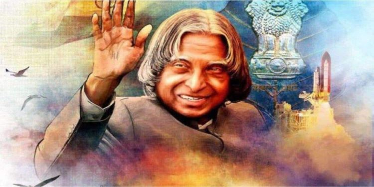

Dr. A. P. J. Abdul Kalam
The missile man

Dr. A. P. J. Abdul Kalam waving his hand
Timeline of Dr. A. P. J. Abdul Kalam
- 1931 - Born on 15 October at Rameshwaram, Tamil Nadu
- 1954 - Graduated from St. Joseph's College, Tiruchirappalii
- 1955 - Enrolled at MIT to study aerospace engineering
- 1960 - Joined DRDO as Chief Scientist
- 1965 - Started rocket project independently at DRDO
- 1969 - Transferred to ISRO
- 1980 - Responsible for development of AGNI and PRITHVI missiles
- 1981 - Padma Bhushan Government of India
- 1990 - Padma Vibhushan Government of India
- 1997 - Bharat Ratna Government of India
- 1992-1999 - Served as Chief Scientific Adviser to the PM and secretary of DRDO
- 2002-2007 - Served as the 11th president of India
- 2012 - Launched mission for youth of the nation called "What Can I Give Movement"
- 2015 - Passed away of 27th July in Shillong, Meghalaya
Quotes by Dr. A. P. J. Abdul Kalam
- "Excellence is a continuous process and not an accident"
- "If we are not free, no one will respect us"
- "For me, there are two types of people: the young and the experienced"
- "Creativity is seeing the same thing, but thinking differently"
- "Failure will never overtake if my definition to succeed is strong enough"